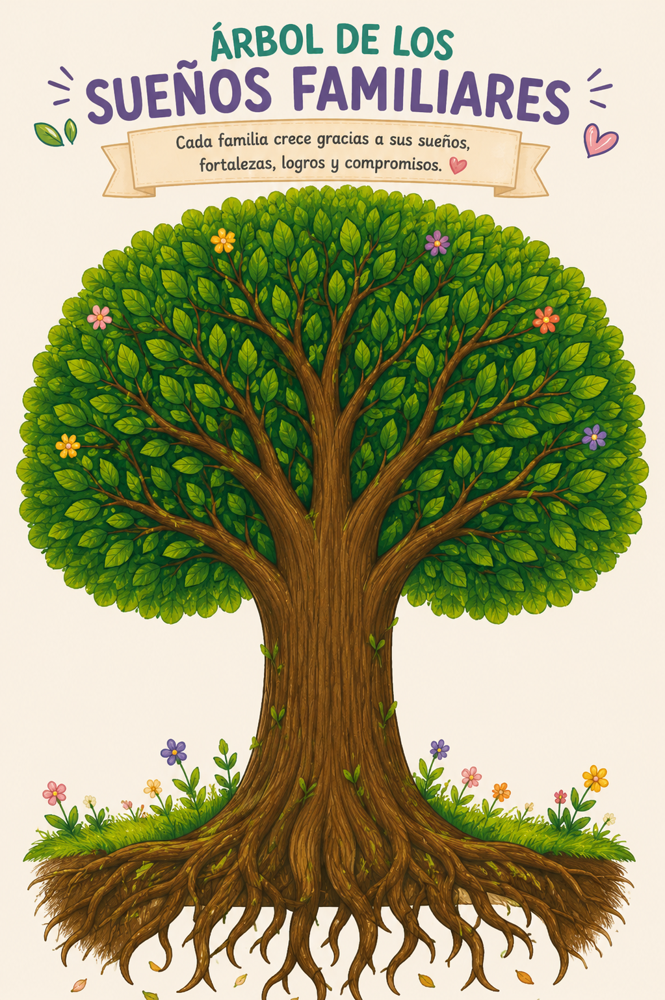

Una construcción colectiva, en tiempo real, para familias que crecen.
Ingresa la clave de acceso para controlar la actividad.
Esperando al facilitador...

Controla el orden de las rondas para los participantes.
Toca una ronda para activarla. Los participantes solo pueden responder la ronda encendida.